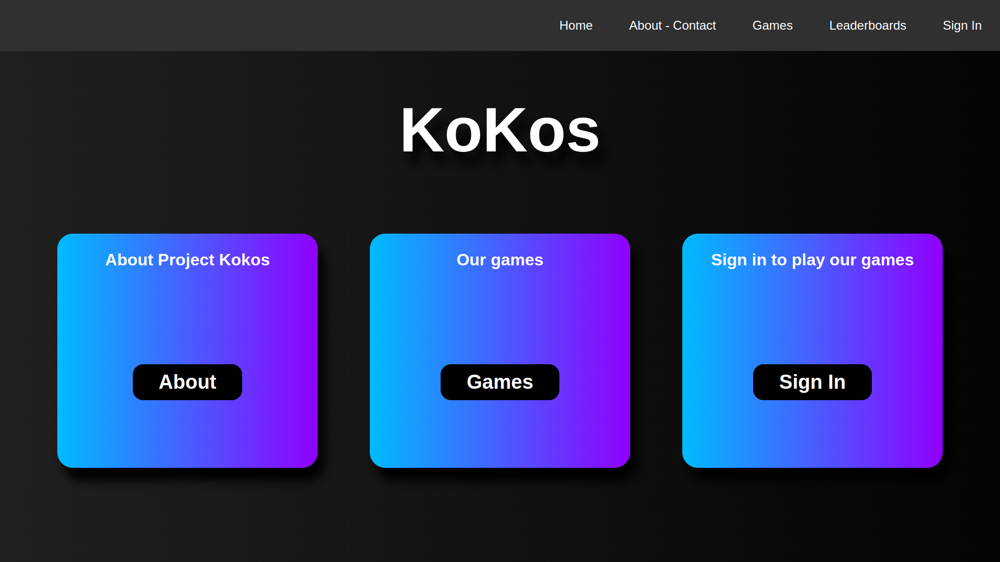
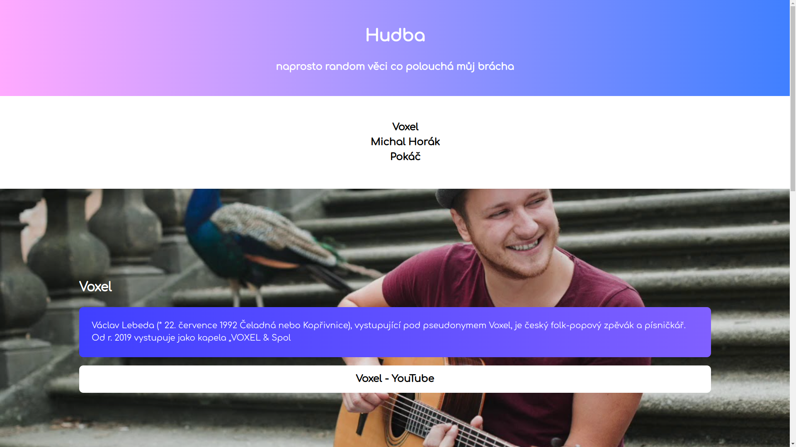
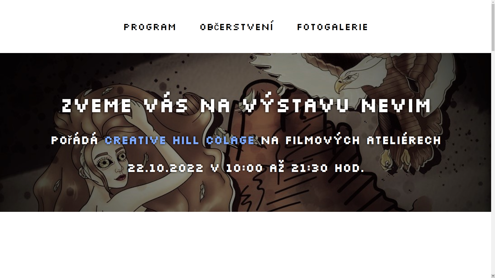
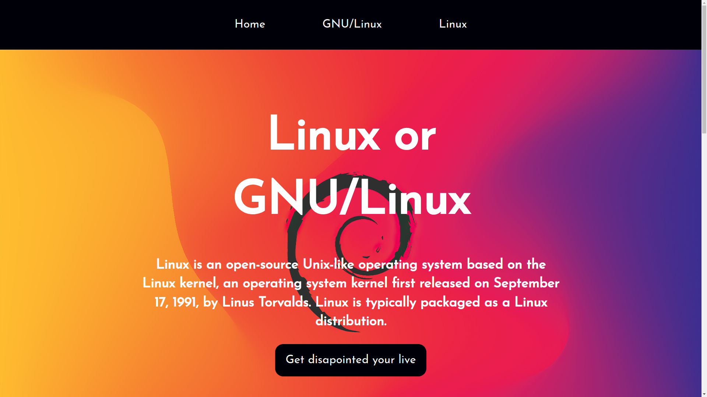

kokos.wz.cz

Proč?
Stránka kokos.wz.cz byla, stejně jako Project Titan, vytvořena pro příjmací zkoušky na Creative Hill Collage. Byl to totiž skvělí způsob jak propojit dva projekty do hromady - webovou stránku a moje hry. Záměrem bylo vytvořit stránku, na keteré si může kdokoli zahrát moje hry. Pro vylepšení stránky jsem také přidal možnost vytvoření účtu a porovnávaní si výsledků na Leaderboardech
Struktura
Stránka má landing page kde si může hráč vybrat z několika karet, co na stránce chce dělat, to jest - hrát hry, dozvědět se něco o projektu a stránce, nebo si vytvořit účet. Dále se na každé stránce nachází navigační bar, který slouží k okamžitému přesování skrz web. V navbaru se nachazejí možnosti:
- Home - domovská stránka / landingpage
- About-Contact - o projektu a e-mail pro kontakt
- Games - seznam her hratelných na webu
- Leaderboards - výsledky ze hry Project Titan a Project Titan 2.0
- Sign In / Sign Out - slouží pro přihlašování a odhlašování z účtu.
Leaderboardy
Jedná se o propojení hry Project Titan a Project Titan 2.0 s webem za účelem dát možnost porovnat si svoje score s ostatnímy hráči. Score je vázáno na váš účet, keterý je v tabulce zobrazen pod vaším nicknamem (přezdívkou). Score se unploadne automaticky jakmyle ve hře zemřete. Po smrti budete přesměrováni právě na stránku s leaderboardy kde můžete okamžitě vydět vaší pozici.
Hudba (CHC)

Proč
Tato stránka vzikla během prvního měsíce na škole Crative Hill Collage. Mělo se jednat o jednoduchou stránku, abychom ukázaly kolik toho umíme, aby vyučující měl představu o tom v jakém rozmezí zkušeností se zde pohybujeme. Zadání znělo: Vytvořte stránku se dvěma/třemi hudebními kapelami (nebo zpěváci/zpěvačky), vložte informace o umělci, obrázek, číslovaný a nečíslovaný seznam, odkazy na videa. Stránku včetně odkazů nastylujte.
Struktura a design
Stránka je rozdělena na tři části. Každá pro jednoho hudebníka. Designem jsem se snažil být jednoduchý ale přitom zajímavý. Využil jsem na oko příjemné barevné kombinace a přechody. Jinak stránka nenabízí žádný jiný zajímavý element který by podle mého stál za zmínku.
Výstava Nevim (CHC)

Proč?
Výstava Nevim byla další stránkou vyvořenou v předmětu Programování WWW na škole CHC. Zadaním bylo vyvořit webovou stránku jako pozvánku na virtuální výstvu pořádanou na naší škole.
Struktura a design
Zde jsem zvolil jemnější paletu barev, aby stránka více odpovídala tématu, o kterém pojednává. Stránka je opět one-page design s jednotlivými sekcemi seřazenými postupně za sebou. V navigačním menu se nacházejí jednoduché odkazy na jednotlivé sekce na webu. První sekce obsahuje program, jak by událost měla probíhat, druhá sekce obsahuje, co bude za možnosti k občerstvení a třetí sekce je fotogalerie s fotkami jednotlivých exponátů.
Linux or GNU/Linux (CHC)

Proč?
Opět CHC úkol. Tentokrát jsme měli volnější téma. Jediná podmínka zadání byla, že musíme použít css float. Proto jsem si vybral svoje vlastní téma, kterým bylo: Linux or GNU/Linux.
Struktura a design
Řekl bych, že tentokrát jsem zvolil zlatou střední cestu. Stránka sice je velmi kontrastní, ale přitom není plná gradientů a spousty různých barevných kombinací. Jediným opravdu barevným elementem je header, který má jako pozadí velké logo linuxové distribuce Debian na gradientovém pozadí. Dále už je stránka provedena pouze v černé a bílé barvě.